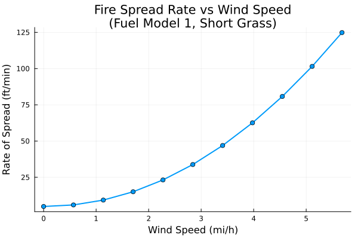
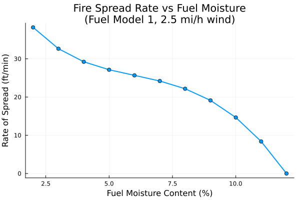
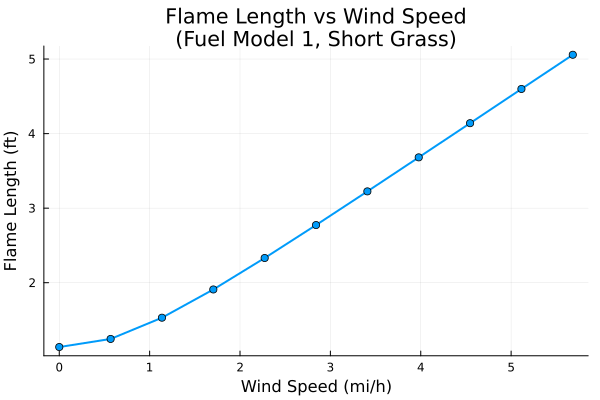

Rothermel Surface Fire Spread Model
Overview
The Rothermel surface fire spread model is a semi-empirical model that predicts the rate of spread of surface fires in wildland fuels. Developed by Richard C. Rothermel in 1972, it remains one of the most widely used fire behavior models in the United States.
The model calculates fire spread rate based on a heat source/heat sink balance:
- Heat source: Energy released by the fire (reaction intensity) modified by wind and slope
- Heat sink: Energy required to raise fuel ahead of the fire to ignition temperature
Reference: Andrews, Patricia L. 2018. The Rothermel surface fire spread model and associated developments: A comprehensive explanation. Gen. Tech. Rep. RMRS-GTR-371. Fort Collins, CO: U.S. Department of Agriculture, Forest Service, Rocky Mountain Research Station. 121 p.
WildlandFire.RothermelFireSpread — Function
RothermelFireSpread(; name=:RothermelFireSpread)Create a Rothermel surface fire spread model system.
The Rothermel model is a semi-empirical model for predicting the rate of spread of surface fires in wildland fuels. It calculates the fire spread rate based on a heat source/heat sink balance, where the heat source is the reaction intensity modified by wind and slope factors, and the heat sink is the energy required to raise the fuel to ignition temperature.
This implementation uses SI units. The original Rothermel equations were calibrated in US customary units, so all empirical coefficients have been converted to SI. Key unit conversions from the original formulation:
- Length: 1 ft = 0.3048 m
- Mass: 1 lb = 0.453592 kg
- Energy: 1 Btu = 1055.06 J
- Load: 1 lb/ft² = 4.88243 kg/m²
- Density: 1 lb/ft³ = 16.0185 kg/m³
Arguments
name: System name (default::RothermelFireSpread)
Model Description
The fundamental equation is:
R = IR * ξ * (1 + φw + φs) / (ρb * ε * Qig)Where:
R: Rate of spread (m/s)IR: Reaction intensity (W/m²)ξ: Propagating flux ratio (dimensionless)φw: Wind factor (dimensionless)φs: Slope factor (dimensionless)ρb: Bulk density (kg/m³)ε: Effective heating number (dimensionless)Qig: Heat of preignition (J/kg)
Reference
Andrews, Patricia L. 2018. The Rothermel surface fire spread model and associated developments: A comprehensive explanation. Gen. Tech. Rep. RMRS-GTR-371. Fort Collins, CO: U.S. Department of Agriculture, Forest Service, Rocky Mountain Research Station. 121 p.
Example
using ModelingToolkit, WildlandFire, OrdinaryDiffEqDefault
sys = RothermelFireSpread()
compiled_sys = mtkcompile(sys)
# Set parameters for fuel model 1 (short grass) in SI units
# Note: This is an algebraic system, so we use NonlinearProblem
prob = NonlinearProblem(compiled_sys, Dict(
compiled_sys.σ => 11483.0, # SAV ratio (1/m), converted from 3500 1/ft
compiled_sys.w0 => 0.166, # Fuel load (kg/m²), converted from 0.034 lb/ft²
compiled_sys.δ => 0.3048, # Fuel bed depth (m), converted from 1.0 ft
compiled_sys.Mx => 0.12, # Moisture of extinction (fraction)
compiled_sys.Mf => 0.05, # Fuel moisture content (fraction)
compiled_sys.U => 2.235, # Wind speed (m/s), converted from 5 mi/h
compiled_sys.tanϕ => 0.0 # Slope (flat)
))
sol = solve(prob)WildlandFire.DynamicFuelLoadTransfer — Function
DynamicFuelLoadTransfer(; name=:DynamicFuelLoadTransfer)Create a dynamic fuel model load transfer system.
Dynamic fuel models transfer load from live herbaceous fuel to dead herbaceous fuel based on the live herbaceous fuel moisture content. This simulates the curing of herbaceous fuels as they dry out during the fire season.
Transfer Equation
The fraction of live herbaceous load transferred to dead herbaceous is:
T = -1.11 * Mf_live_herb + 1.33 (0 ≤ T ≤ 1.0)Where Mf_live_herb is the live herbaceous fuel moisture content (fraction).
Reference
Andrews, Patricia L. 2018. The Rothermel surface fire spread model and associated developments: A comprehensive explanation. Gen. Tech. Rep. RMRS-GTR-371. Fort Collins, CO: U.S. Department of Agriculture, Forest Service, Rocky Mountain Research Station. 121 p.
WildlandFire.LiveFuelMoistureExtinction — Function
LiveFuelMoistureExtinction(; name=:LiveFuelMoistureExtinction)Create a system for calculating live fuel moisture of extinction.
The live fuel moisture of extinction is calculated based on the ratio of dead to live fuel loading weighted by effective heating numbers, and the dead fuel moisture content.
Reference
Andrews, Patricia L. 2018. The Rothermel surface fire spread model and associated developments: A comprehensive explanation. Gen. Tech. Rep. RMRS-GTR-371. Fort Collins, CO: U.S. Department of Agriculture, Forest Service, Rocky Mountain Research Station. 121 p.
WildlandFire.EffectiveMidflameWindSpeed — Function
EffectiveMidflameWindSpeed(; name=:EffectiveMidflameWindSpeed)Create a system for calculating effective midflame wind speed.
The effective midflame wind speed combines the effects of actual wind and slope into an equivalent wind speed for fire behavior calculations.
Reference
Andrews, Patricia L. 2018. The Rothermel surface fire spread model and associated developments: A comprehensive explanation. Gen. Tech. Rep. RMRS-GTR-371. Fort Collins, CO: U.S. Department of Agriculture, Forest Service, Rocky Mountain Research Station. 121 p.
WildlandFire.WindLimit — Function
WindLimit(; name=:WindLimit, use_corrected=true)Create a system for calculating the maximum effective wind speed limit.
The wind limit represents the maximum effective wind speed that can influence fire spread rate. Beyond this limit, the wind factor is capped.
Arguments
use_corrected: If true (default), use the corrected equation from Andrews et al. 2013. If false, use the original equation.
Reference
Andrews, Patricia L. 2018. The Rothermel surface fire spread model and associated developments: A comprehensive explanation. Gen. Tech. Rep. RMRS-GTR-371. Fort Collins, CO: U.S. Department of Agriculture, Forest Service, Rocky Mountain Research Station. 121 p.
Implementation
The Rothermel model is implemented as a ModelingToolkit.jl algebraic system. The main function RothermelFireSpread() creates a system with 26 equations representing all intermediate calculations and output variables.
Important Note on Units
This implementation uses SI units throughout. The original Rothermel equations were calibrated in US customary units (ft, lb, Btu), so all empirical coefficients have been converted to SI. Key conversions from the original formulation:
| Quantity | US Customary | SI Equivalent |
|---|---|---|
| Load | 1 lb/ft² | 4.88 kg/m² |
| Load | 1 ton/acre | 0.224 kg/m² |
| Wind speed | 1 mi/h | 0.447 m/s |
| Wind speed | 1 ft/min | 0.00508 m/s |
| Energy | 1 Btu | 1.055 kJ |
| Length | 1 ft | 0.305 m |
| Mass | 1 lb | 0.454 kg |
| SAV ratio | 1 1/ft | 3.28 1/m |
| Density | 1 lb/ft³ | 16.02 kg/m³ |
| Heat content | 1 Btu/lb | 2326 J/kg |
| Power flux | 1 Btu/ft²/min | 189.3 W/m² |
State Variables
using DataFrames, ModelingToolkit, Symbolics, DynamicQuantities
using WildlandFire
sys = RothermelFireSpread()
vars = unknowns(sys)
units = [ModelingToolkit.get_unit(v) for v in vars]
DataFrame(
:Name => [string(Symbolics.tosymbol(v, escape = false)) for v in vars],
:Units => [isnothing(u) ? "dimensionless" : string(u) for u in units],
:Description => [ModelingToolkit.getdescription(v) for v in vars]
)| Row | Name | Units | Description |
|---|---|---|---|
| String | String | String | |
| 1 | wn | 1.0 m⁻² kg | Net fuel load |
| 2 | ρb | 1.0 m⁻³ kg | Oven-dry bulk density |
| 3 | β | 1.0 | Packing ratio (dimensionless) |
| 4 | β_op | 1.0 | Optimum packing ratio (dimensionless) |
| 5 | β_ratio | 1.0 | Relative packing ratio β/β_op (dimensionless) |
| 6 | Γ_max | 1.0 s⁻¹ | Maximum reaction velocity |
| 7 | A_coeff | 1.0 | Coefficient A for reaction velocity (dimensionless) |
| 8 | Γ_prime | 1.0 s⁻¹ | Optimum reaction velocity |
| 9 | rM | 1.0 | Moisture ratio Mf/Mx (dimensionless) |
| 10 | η_M | 1.0 | Moisture damping coefficient (dimensionless) |
| 11 | η_s | 1.0 | Mineral damping coefficient (dimensionless) |
| 12 | IR | 1.0 kg s⁻³ | Reaction intensity |
| 13 | ξ | 1.0 | Propagating flux ratio (dimensionless) |
| 14 | C_coeff | 1.0 | Wind coefficient C (dimensionless) |
| 15 | B_coeff | 1.0 | Wind coefficient B (dimensionless) |
| 16 | E_coeff | 1.0 | Wind coefficient E (dimensionless) |
| 17 | φw | 1.0 | Wind factor (dimensionless) |
| 18 | φs | 1.0 | Slope factor (dimensionless) |
| 19 | ε | 1.0 | Effective heating number (dimensionless) |
| 20 | Qig | 1.0 m² s⁻² | Heat of preignition |
| 21 | R0 | 1.0 m s⁻¹ | No-wind no-slope rate of spread |
| 22 | R | 1.0 m s⁻¹ | Rate of spread |
| 23 | t_r | 1.0 s | Flame residence time |
| 24 | HA | 1.0 kg s⁻² | Heat per unit area |
| 25 | IB | 1.0 m kg s⁻³ | Fireline intensity (Byram) |
| 26 | F_L | 1.0 m | Flame length (Byram) |
Parameters
params = parameters(sys)
punits = [ModelingToolkit.get_unit(p) for p in params]
DataFrame(
:Name => [string(Symbolics.tosymbol(p, escape = false)) for p in params],
:Units => [isnothing(u) ? "dimensionless" : string(u) for u in punits],
:Description => [ModelingToolkit.getdescription(p) for p in params]
)| Row | Name | Units | Description |
|---|---|---|---|
| String | String | String | |
| 1 | S_T | 1.0 | Total mineral content (dimensionless) |
| 2 | one | 1.0 | Dimensionless one for unit balancing |
| 3 | w0 | 1.0 m⁻² kg | Oven-dry fuel load |
| 4 | δ | 1.0 m | Fuel bed depth |
| 5 | ρ_p | 1.0 m⁻³ kg | Oven-dry particle density (32 lb/ft³) |
| 6 | c_beta_op | 1.0 | Optimum packing ratio coefficient (SI, empirical) |
| 7 | σ | 1.0 m⁻¹ | Surface-area-to-volume ratio |
| 8 | σ_ref | 1.0 m⁻¹ | Reference SAV ratio for non-dimensionalization |
| 9 | c_Gamma_mult | 1.0 s⁻¹ | Γ_max unit conversion factor |
| 10 | c_Gamma_denom2 | 1.0 | Γ_max denominator constant 2 (SI, empirical) |
| 11 | c_Gamma_denom1 | 1.0 | Γ_max denominator constant 1 (SI, empirical) |
| 12 | c_A | 1.0 | Coefficient A constant (SI, empirical) |
| 13 | Mf | 1.0 | Fuel moisture content (dimensionless, dry weight basis) |
| 14 | Mx | 1.0 | Dead fuel moisture of extinction (dimensionless) |
| 15 | c_etaM_1 | 1.0 | Moisture damping coefficient 1 (dimensionless) |
| 16 | c_etaM_2 | 1.0 | Moisture damping coefficient 2 (dimensionless) |
| 17 | c_etaM_3 | 1.0 | Moisture damping coefficient 3 (dimensionless) |
| 18 | c_etas | 1.0 | Mineral damping coefficient (empirical) |
| 19 | S_e | 1.0 | Effective mineral content (dimensionless) |
| 20 | h | 1.0 m² s⁻² | Low heat content (8000 Btu/lb) |
| 21 | c_xi_3 | 1.0 | ξ coefficient 3 (empirical) |
| 22 | c_xi_4 | 1.0 | ξ coefficient 4 (SI, empirical) |
| 23 | c_xi_2 | 1.0 m | ξ coefficient 2 (SI, empirical) |
| 24 | c_xi_1 | 1.0 | ξ coefficient 1 (empirical) |
| 25 | c_C_1 | 1.0 | Wind coefficient C constant 1 (empirical) |
| 26 | c_C_2 | 1.0 | Wind coefficient C constant 2 (SI, empirical) |
| 27 | c_B | 1.0 | Wind coefficient B constant (SI, empirical) |
| 28 | c_E_1 | 1.0 | Wind coefficient E constant 1 (empirical) |
| 29 | c_E_2 | 1.0 m | Wind coefficient E constant 2 (SI, empirical) |
| 30 | U | 1.0 m s⁻¹ | Wind velocity at midflame height |
| 31 | U_ref | 1.0 m s⁻¹ | Reference wind speed for non-dimensionalization |
| 32 | c_phis | 1.0 | Slope factor coefficient (empirical) |
| 33 | tanϕ | 1.0 | Slope steepness (dimensionless, rise/run) |
| 34 | c_eps | 1.0 m⁻¹ | Effective heating number coefficient (SI, empirical) |
| 35 | c_Qig_2 | 1.0 m² s⁻² | Heat of preignition constant 2 (SI) |
| 36 | c_Qig_1 | 1.0 m² s⁻² | Heat of preignition constant 1 (SI) |
| 37 | c_tr | 1.0 m⁻¹ s | Residence time coefficient (SI, empirical) |
| 38 | IB_ref | 1.0 m kg s⁻³ | Reference fireline intensity for non-dimensionalization |
| 39 | c_FL | 1.0 m | Flame length coefficient (SI, empirical) |
Equations
equations(sys)26-element Vector{Symbolics.Equation}:
wn(t) ~ (-S_T + one)*w0
ρb(t) ~ w0 / δ
β(t) ~ ρb(t) / ρ_p
β_op(t) ~ c_beta_op / ((σ / σ_ref)^0.8189)
β_ratio(t) ~ β(t) / β_op(t)
Γ_max(t) ~ (c_Gamma_mult*((σ / σ_ref)^1.5)) / (c_Gamma_denom1 + c_Gamma_denom2*((σ / σ_ref)^1.5))
A_coeff(t) ~ c_A / ((σ / σ_ref)^0.7913)
Γ_prime(t) ~ exp((one - β_ratio(t))*A_coeff(t))*(β_ratio(t)^A_coeff(t))*Γ_max(t)
rM(t) ~ min(Mf / Mx, one)
η_M(t) ~ one - c_etaM_1*rM(t) + c_etaM_2*(rM(t)^2) - c_etaM_3*(rM(t)^3)
⋮
φs(t) ~ (c_phis*(tanϕ^2)) / (β(t)^0.3)
ε(t) ~ exp((-c_eps) / σ)
Qig(t) ~ c_Qig_1 + Mf*c_Qig_2
R0(t) ~ (IR(t)*ξ(t)) / (Qig(t)*ε(t)*ρb(t))
R(t) ~ (one + φw(t) + φs(t))*R0(t)
t_r(t) ~ c_tr / σ
HA(t) ~ IR(t)*t_r(t)
IB(t) ~ R(t)*HA(t)
F_L(t) ~ c_FL*((IB(t) / IB_ref)^0.46)Main Equations
The fundamental rate of spread equation is:
\[R = \frac{I_R \cdot \xi \cdot (1 + \phi_w + \phi_s)}{\rho_b \cdot \varepsilon \cdot Q_{ig}}\]
Where:
- $I_R$ = Reaction intensity
- $\xi$ = Propagating flux ratio
- $\phi_w$ = Wind factor
- $\phi_s$ = Slope factor
- $\rho_b$ = Bulk density
- $\varepsilon$ = Effective heating number
- $Q_{ig}$ = Heat of preignition
Analysis
Example: Fire Spread Under Different Conditions
using WildlandFire
using ModelingToolkit
using NonlinearSolve
using Plots
# Create the Rothermel system
sys = RothermelFireSpread()
compiled_sys = mtkcompile(sys)
# Unit conversion factors
ft_to_m = 0.3048
lb_to_kg = 0.453592
lbft2_to_kgm2 = lb_to_kg / ft_to_m^2
invft_to_invm = 1 / ft_to_m
ftmin_to_ms = ft_to_m / 60.0
# Fuel Model 1 parameters (short grass) converted to SI
# Original US: σ = 3500 1/ft, w0 = 0.034 lb/ft², δ = 1.0 ft, Mx = 0.12
base_params = Dict(
compiled_sys.σ => 3500.0 * invft_to_invm, # SAV ratio (1/m)
compiled_sys.w0 => 0.034 * lbft2_to_kgm2, # Fuel load (kg/m²)
compiled_sys.δ => 1.0 * ft_to_m, # Fuel bed depth (m)
compiled_sys.Mx => 0.12, # Moisture of extinction
compiled_sys.Mf => 0.05, # Fuel moisture content
compiled_sys.tanϕ => 0.0 # Flat terrain
)
# Calculate spread rate for different wind speeds
# Wind speeds from 0 to ~6 mi/h in m/s
wind_speeds_ms = [U * ftmin_to_ms for U in 0:50:500]
spread_rates = Float64[]
for U in wind_speeds_ms
prob = NonlinearProblem(compiled_sys, merge(base_params, Dict(compiled_sys.U => U)))
sol = solve(prob)
push!(spread_rates, sol[compiled_sys.R])
end
# Plot results (convert wind to mi/h and spread rate to ft/min for familiar units)
plot(wind_speeds_ms ./ 0.447, # Convert m/s to mi/h
spread_rates ./ ftmin_to_ms, # Convert m/s to ft/min
xlabel = "Wind Speed (mi/h)",
ylabel = "Rate of Spread (ft/min)",
title = "Fire Spread Rate vs Wind Speed\n(Fuel Model 1, Short Grass)",
legend = false,
linewidth = 2,
marker = :circle)
Effect of Fuel Moisture
# Calculate spread rate for different fuel moisture contents
moisture_contents = 0.02:0.01:0.12 # 2% to 12% (extinction)
spread_rates_moist = Float64[]
U_wind = 220.0 * ftmin_to_ms # 2.5 mi/h in m/s
for Mf in moisture_contents
params = merge(base_params, Dict(compiled_sys.Mf => Mf, compiled_sys.U => U_wind))
prob = NonlinearProblem(compiled_sys, params)
sol = solve(prob)
push!(spread_rates_moist, sol[compiled_sys.R])
end
plot(moisture_contents .* 100,
spread_rates_moist ./ ftmin_to_ms,
xlabel = "Fuel Moisture Content (%)",
ylabel = "Rate of Spread (ft/min)",
title = "Fire Spread Rate vs Fuel Moisture\n(Fuel Model 1, 2.5 mi/h wind)",
legend = false,
linewidth = 2,
marker = :circle)
Flame Length Prediction
# Calculate flame length for different wind speeds
flame_lengths = Float64[]
for U in wind_speeds_ms
prob = NonlinearProblem(compiled_sys, merge(base_params, Dict(compiled_sys.U => U)))
sol = solve(prob)
push!(flame_lengths, sol[compiled_sys.F_L])
end
plot(wind_speeds_ms ./ 0.447, # Convert m/s to mi/h
flame_lengths ./ ft_to_m, # Convert m to ft
xlabel = "Wind Speed (mi/h)",
ylabel = "Flame Length (ft)",
title = "Flame Length vs Wind Speed\n(Fuel Model 1, Short Grass)",
legend = false,
linewidth = 2,
marker = :circle)
Standard Fuel Models
The Rothermel model uses standardized fuel model parameters. The 13 original fuel models and 40 Scott and Burgan fuel models define typical vegetation types. For Fuel Model 1 (short grass) used in the examples above:
| Parameter | US Customary | SI Value |
|---|---|---|
| SAV ratio (σ) | 3,500 1/ft | 11,483 1/m |
| Fuel load (w0) | 0.034 lb/ft² (0.74 ton/acre) | 0.166 kg/m² |
| Fuel bed depth (δ) | 1.0 ft | 0.305 m |
| Moisture of extinction (Mx) | 0.12 (12%) | 0.12 (12%) |
| Heat content (h) | 8,000 Btu/lb | 18,608,000 J/kg |
| Particle density (ρ_p) | 32 lb/ft³ | 512.6 kg/m³ |
Related Models
Dynamic Fuel Model Load Transfer
The DynamicFuelLoadTransfer component simulates the curing of herbaceous fuels by transferring load from live to dead fuel categories based on live herbaceous moisture:
\[T = -1.11 \cdot M_{f,live} + 1.33 \quad (0 \leq T \leq 1)\]
Live Fuel Moisture of Extinction
The LiveFuelMoistureExtinction component calculates the moisture content at which live fuel will no longer sustain fire spread:
\[M_{x,live} = \max\left(M_{x,dead}, 2.9 W \left(1 - \frac{M_{f,dead}}{M_{x,dead}}\right) - 0.226\right)\]
Wind Limit
The WindLimit component calculates the maximum effective wind speed that can influence fire spread rate. The corrected equation (Andrews et al. 2013) in SI units is:
\[U_{limit} = 0.0857 \cdot I_R^{1/3}\]
where $U_{limit}$ is in m/s and $I_R$ is in W/m².